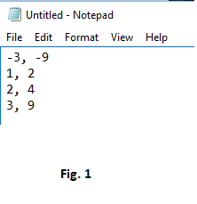
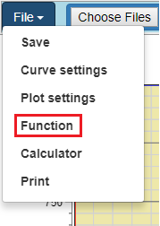
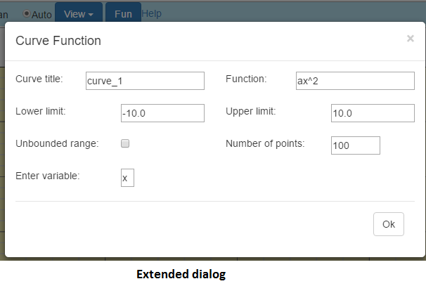
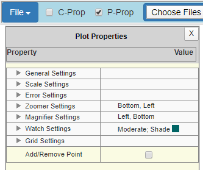

Grapher Interface
The Grapher interface is composed principally of a single window in which curves are created and displayed.
The important components of the window are:
1. the Toolbar (at the top of the window)
2. the Sidebar
3. the Display canvas
The Toolbar

The Toolbar is located at the top of the window. It is largely comprised of tool buttons which either launches dialogs, display dropdowns, or activate commands. It is possible to see the function of each tool button by hovering over it and reading the tooltip.
The Sidebar
The Sidebar provides a "dropdown select list" of all curves in the plot. If a curve of a function with unknown coefficients is selected, the sidebar provides as many spinboxes as unknown coefficients. A spinbox is use to adjust the coefficient associated with it. The default is to immediately update the plot as any coefficient value is varied. To prevent immediate update, check the "onchange" checkbox so the plot is updated after a change in any coefficient value.
If a "watch" is selected (a watch is selected via the watch dropdown list from the toolbar) the "Sidebar" displays the watch. Some watch values (for example rulers) are displayed in a spinbox that permit the value to be varied.
The Display canvas
The Display canvas is the area of the window where the application draws the various components that comprise the graph. These components are:
- Bottom scale
- Left scale
- Top scale
- Right scale
- Bottom scale title
- Left scale title
- Top scale title
- Right scale title
- Minor gridlines
- Major gridlines
- Title
- Footer
- Legend

While most of a graph's components are typical, some require discussion.
The Legend
A quick look at the legend for the plot in Fig.4 suggest that there are two curves. Yet only one curve is displayed. A closer look at the legend reveals that the first legend item is checked. A legend item is checked by clicking it. When a legend item is checked, the associated curve and any curve specific items, such as symbols, is hidden. If autoscale is enabled, hiding a curve results in axis scale re-calculation. All remain visible plots are redrawn as per the revised axis scale.
Right clicking a legend item brings up a context menu (see Fig.5). This menu allows the activation of curve specific commands. These are:

- axis
- legend attribute
- remove
- rename
- fit
- symbol
- pen
It is possible to see the function of each command by hovering over a menu item and reading the tooltip.
Plotting from data a file
The Grapher allows for plotting of data stored in .txt files on your system's hard drive. The content of a valid data file is comma seperated values (csv).
Simply click the "Choose Files" button on the menu to launch your system's file explorer. In the file explorer, navigate to the data file and open or doubleclick it. That's it.

Plotting a function
The Grapher allows plotting of functions. The functions may contain as much as five unknown coefficients.
From the File menu, click "Function" to launch the Curve Function dialog. In the dialog, set the various attributes and click "Ok". That's it.
The "Function" field of the dialog, allows many different forms of inputs:
- polynomials -
- 4x, 4x^2, 4x^2+2x+8, ax^2+bx+c
- trigs -
- sin(x), cos(x), 4*sin(x), a*cos(x)
- logs -
- log10(x), log9(x), .....log2(x)
- contants -
- e, pi
For trigs, the product sign is required in some situations. If in doubt, always insert the product sign.
When a trig keyword is part of the function, the values in the limit fields are interpreted as radians. To force the dialog to interpret the limits as degrees, follow variables by the "deg" keyword. For example, sin(x deg) in the Function field will cause limits to be interpreted as degrees.
Logs are evaluated according to base. Base 2 through 10 is allowed. log2 is for base 2, log3is for base 3, etc.
The "Lower limit" and "Upper limit" fields accept numbers or expressions (e.g. 2PI) that evaluates to numbers.
If the "Enter variable" field is displayed, you must enter a valid variable. Valid variables are any alpha character other than 'z' or 'e'. 'z' is used internally by the application. Thus, you must not use 'z' for variables or coefficients. 'e' is a mathematical constant that is the base of the natural logarithm.
The "Number of points" field can hold any value from 2 to 200. Too high a value leads to longer processsing time. Too small a value leads to curves that are not very smooth. The default of 100 is adequate for most user cases.
If the "Unbounded range" field is checked, the limits are disregarded. If the plot is panned, the curve is redrawn to the new limits created by panning. Theoretically, the limits are infinite.


Curve fitting
You can launch the "Curve Fitter" dialog by right clicking a legend item and selecting "fit". Alternatively, you can select "Curve Settings" from the File menu and press the Fit button.
From the Fitter dropdown menu, you can select one of six types of fitting. If fit type "Weeding" is selected, you have the option of setting the "Tolerance" and the "Chunk size". The tolerance is the maximum distance, that is acceptable between the original curve and the smoothed curve. Increasing the tolerance will reduce the number of the resulting points. The chunk size limit the number of points passed to a run of the Douglas Peucker algorithm. The runtime of the Douglas Peucker algorithm increases non-linearly with the number of points. For a chunk size > 0 the polygon is split into pieces passed to the algorithm one by one. Checking the "Retain original curve" checkbox allows for the retention of the original curve. The "fitted curve" is a new curve. This feature permits the comparison of various types of fits to the original curve.
A curve that result from fitting has some fitting information associated with it. Right click the legend item and select "fit info..." to view the fitting information in an Alert box.
Curve settings
You launch the "Curve attributes" dialog by clicking "Curve settings" from the File menu.
The dialog opens with the "Curve name" field populated with the names of all curves known to the graph. From the "Curve name" field, you select the name of the curve you wish to modify. You can remove or rename a curve; modify, add
or remove attributes to a curve; add symbols to a curve; fit a curve; change the axis associated with a curve.

Plot settings
You launch the "Plot settings" dialog by clicking "Plot settings" from the File menu.
The dialog has five sections. The "General Settings", "Scale Settings", "Zoomer Settings", "Magnifier Settings" and "Grid Settings".
General Settings
The "Title" tab allows for the setting of a Graph title text, text font, text color, and text weight.The "Footer" tab allows for the setting of a Graph footer text, text font, text color, and text weight.
The "Background" tab allows for the setting of the plotting area background color.
The "Legend" tab allows for the setting of legend area background color and how a curve is represented on the legend.
Scale Settings
The "Title and font" tab allows for the setting of the scales title text, text font, text color, and text weight.The "Type" tab allows for selecting either the linear or log scale. If a log scale is selected, you can set the base.
The "User limits" tab allows for setting the scale limits. Check the "Enable user scale" checkbox to edit the scales.
The "Exponential notation" tab allows for setting when exponential notation is use on scales.
The "Margins" tab allows for setting margins. Positive margins allow the curve to be fully displayed withing the plotting area with room (margins) to spare.
Point selection Settings
Sets what happens to any point that is selected.Error Settings
Sets how the application responds when it encounters an error.Zoomer Settings
This section allows the axes associated with the zoomer to be set. The default is the bottom and left.Magnifier Settings
This section allows the axes associated with the magnifier to be set. The default is the bottom and left.Grid Settings
This section has two tabs that allow setting of the grid attributes.